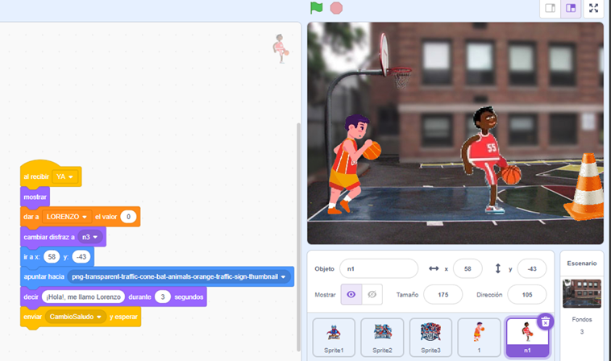
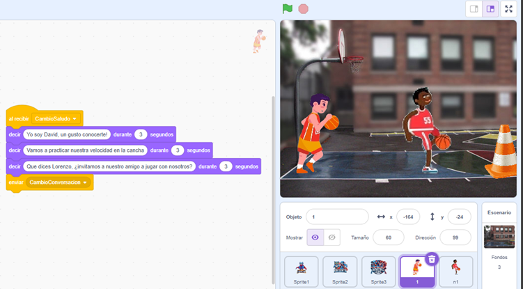
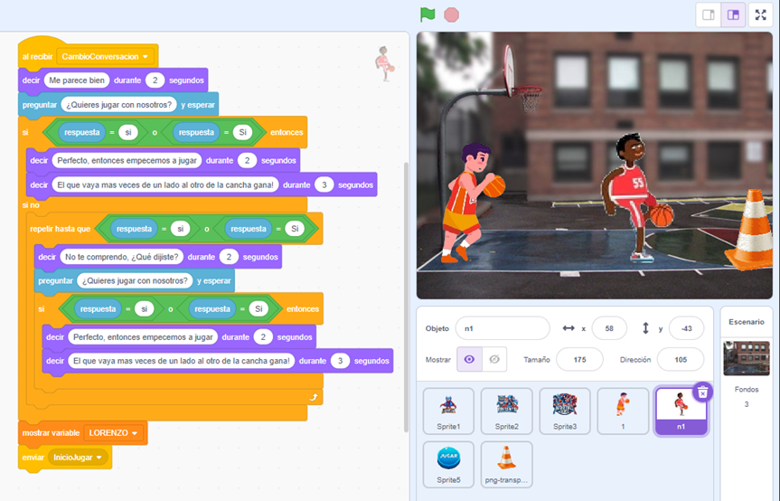

¡Añade Detalles con Condicionales!
Es momento de profundizar en el uso de condicionales y aprovechar su potencial para agregar más detalles y efectos a tu proyecto. Con estos bloques, tus personajes podrán tomar decisiones basadas en ciertas condiciones, haciendo que tu proyecto sea más interactivo y dinámico.
¿Qué debes incluir?
- Al menos un bloque de condicionales: Utiliza un bloque If o If-Else para definir qué acciones deben ocurrir bajo ciertas condiciones.
- Al menos una acción resultante: Diseña una respuesta o efecto que se ejecute cuando se cumpla la condición establecida en el bloque.
¡Recuerda! Los condicionales permiten que tus personajes reaccionen de forma inteligente y personalizada en tu proyecto. Experimenta con diferentes condiciones y efectos para hacer que tus ideas cobren vida.
¿Estás listo para dar este paso? ¡Manos a la obra y observa cómo los condicionales transforman tu proyecto!
Retroalimentación: Uso de Condicionales
En esta etapa, hemos añadido una introducción al juego para hacerlo más interactivo. Al inicio, los personajes tienen una pequeña conversación, y al final de la misma, se plantea al usuario si desea comenzar el juego. Este flujo se logra mediante el uso de condicionales If o If-Else combinados con notificaciones entre personajes.

El personaje llamado Lorenzo inicia la conversación y envía una notificación para que el siguiente personaje continúe hablando.

El personaje llamado David recibe la notificación y continúa la conversación. Al finalizar su intervención, envía otra notificación para cerrar el diálogo.

En la última parte de la conversación, se incluye el bloque If-Else solicitado. Este bloque permite que el proyecto tome decisiones basadas en la respuesta del usuario, agregando una capa de interactividad al juego.
Gracias a estos ajustes, hemos logrado crear una introducción interactiva y dinámica que involucra al usuario desde el inicio, haciendo el proyecto más atractivo y funcional.